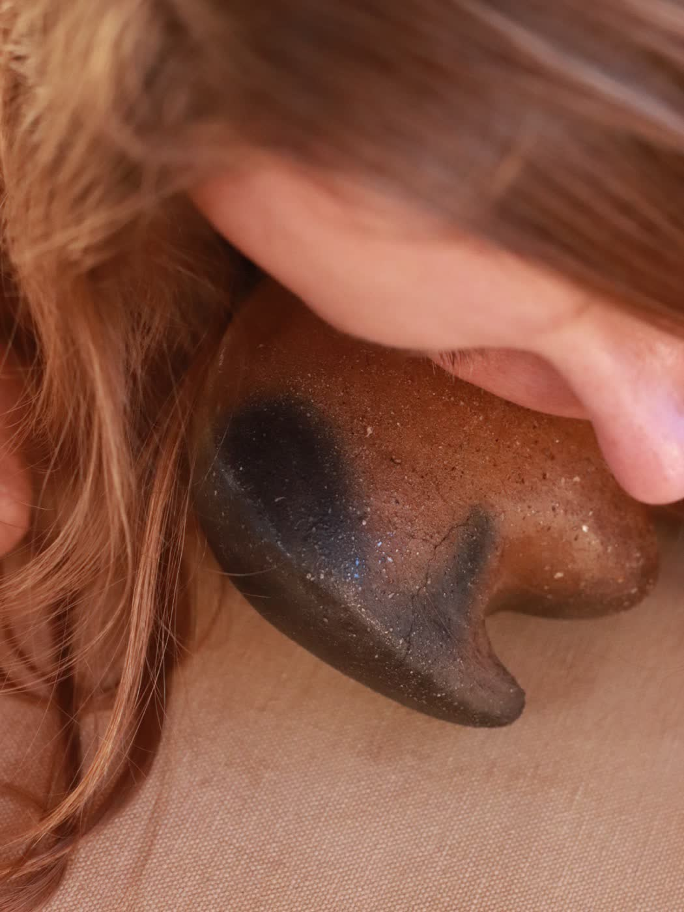

small families of pieces, each one holds a different ground.
quiet companions
Small pieces made to be held, to be touched, to stay close to the hands. They bring you back into yourself.
Wild clay gathered across Baja California Sur and shaped slowly by hand. Each one carries a different ground.



valle
Wild clay gathered in the mountains of Valle de Bravo and the State of Mexico, mixed with sand from the coast of Brittany, where I grew up in France.
Hand-built, stone-burnished, wood-fired. A collection shaped through experimentation, presence, and transformation. Cracks, smoke imprints, and traces left by the firing remain visible as part of the process.


Some pieces presented here are available, and I also occasionally create commissioned pieces in conversation with the person or space they are meant for. enquire about a piece ↗